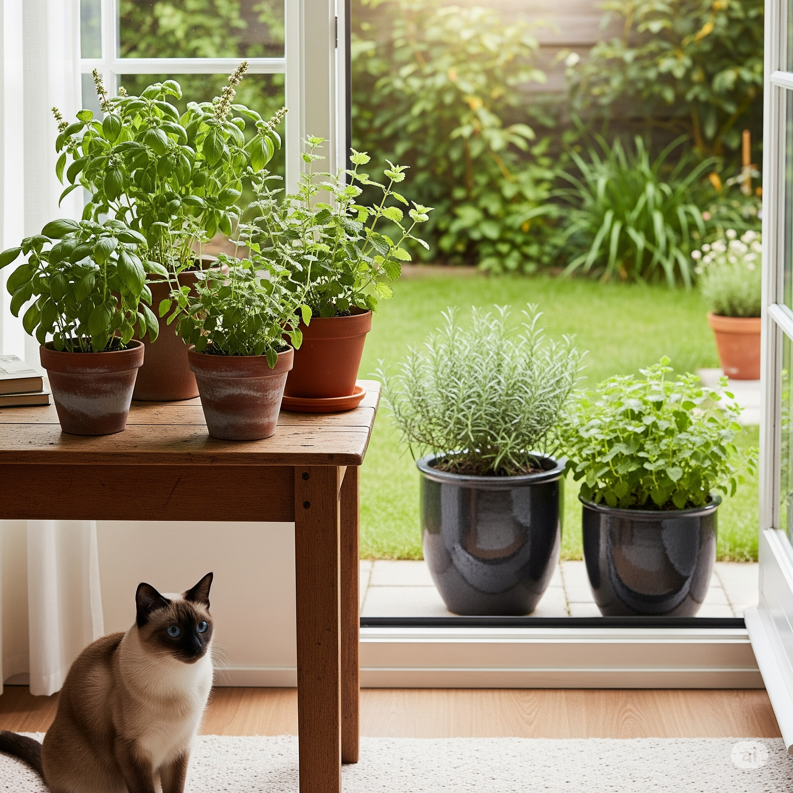

5 Plantas que Perfumarão sua Casa sem Prejudicar seu Gato

Quem convive com gatos sabe: manter a casa perfumada e cheia de verde é possível, mas exige cuidado na escolha das plantas. Algumas espécies aromáticas são seguras e ainda deixam o ambiente mais aconchegante e bonito. Aqui estão cinco opções para perfumar seu lar sem colocar seu felino em risco.
1. Alecrim (Rosmarinus officinalis)
Aroma: fresco, herbal e intenso, típico da cozinha mediterrânea.
Porte: arbusto de 40 cm a 1,5 m, ramificado e com folhas finas e verdes.
Ambiente ideal: varandas ensolaradas, hortas caseiras e áreas externas.
Dica de cultivo: use um vaso profundo e solo bem drenado; regue quando o substrato estiver seco.
💡 Pode ser usado fresco em receitas, trazendo sabor e perfume ao mesmo tempo.
2. Manjericão (Ocimum basilicum)
Aroma: doce e fresco, com notas levemente picantes.
Porte: erva anual de 30 a 60 cm, com folhas ovais e verdes (ou roxas, em algumas variedades).
Ambiente ideal: cozinhas iluminadas, varandas e janelas ensolaradas.
Dica de cultivo: colha regularmente as pontas para estimular novas brotações e prolongar o ciclo.
💡 Variedades como o manjericão-roxo também são seguras e adicionam cor aos arranjos.
3. Hortelã-gato (Nepeta cataria)
Aroma: mentolado suave, atraente para muitos felinos.
Porte: herbácea de 30 a 60 cm, com folhas verdes aveludadas e flores lilases.
Ambiente ideal: jardins, vasos externos e locais onde o gato possa interagir.
Dica de cultivo: plante em local ensolarado e mantenha o solo levemente úmido; reponha mudas anualmente para manter o vigor.
💡 Pode ser oferecida fresca ou seca como enriquecimento ambiental para seu gato.
4. Erva-cidreira (Melissa officinalis)
Aroma: cítrico e suave, lembrando limão fresco.
Porte: herbácea perene de 30 a 80 cm, com folhas verdes levemente enrugadas.
Ambiente ideal: jardins de temperos, canteiros ou vasos próximos à cozinha.
Dica de cultivo: prefira luz indireta intensa ou sol suave da manhã; regue com frequência moderada.
💡 Também conhecida por suas propriedades calmantes para humanos.
5. Alecrim-pimenta (Lippia sidoides)
Aroma: herbal forte, levemente apimentado e refrescante.
Porte: arbusto de 1 a 2 m, com folhas pequenas e textura áspera.
Ambiente ideal: áreas externas ensolaradas e jardins aromáticos.
Dica de cultivo: plante em solo arenoso e com boa drenagem; faça podas para manter a forma compacta.
💡 Muito usado na culinária nordestina, trazendo aroma e sabor únicos.
🌿 Dica final
Mesmo plantas seguras podem causar desconforto se ingeridas em excesso. O ideal é posicionar os vasos de forma que seu gato possa conviver, mas sem roer demais as folhas.
← Voltar para o Blog